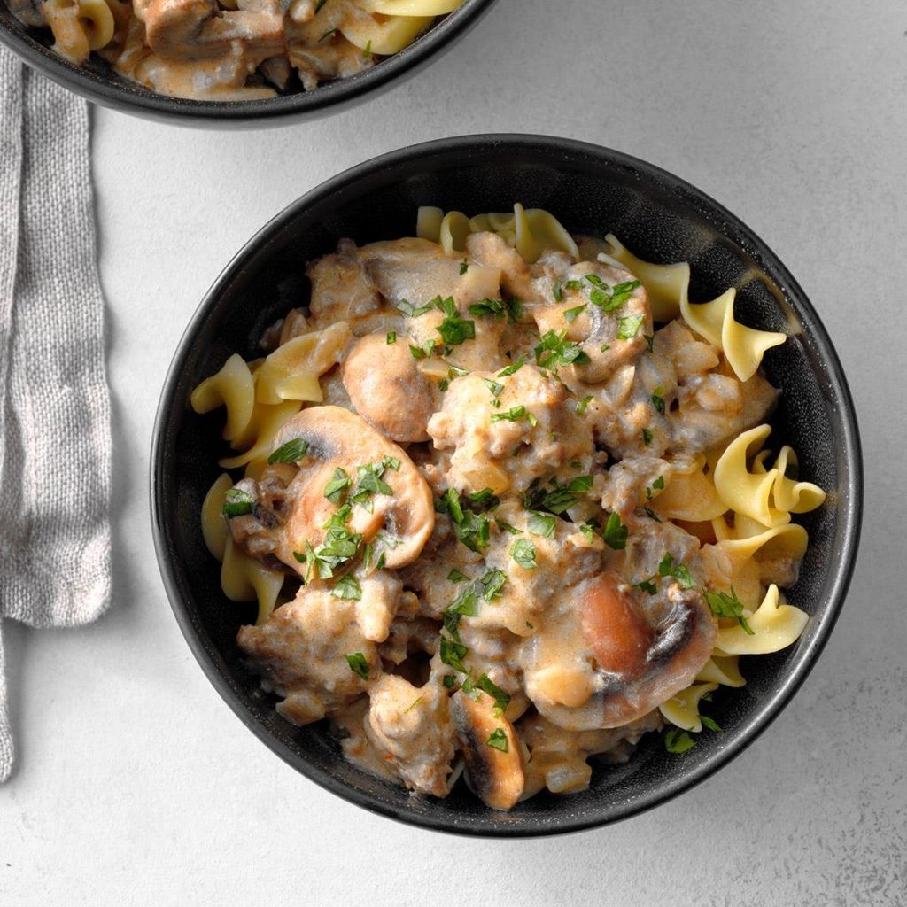

School-Night Sausage Stroganoff
Ingredients
8 ounces uncooked wide egg noodles
1 pound bulk pork sausage
8 ounces sliced fresh mushrooms
1 medium onion, chopped
2 garlic cloves, minced
1/4 cup all-purpose flour
1/4 teaspoon salt
1/2 teaspoon paprika
1-1/2 cups beef broth
1 cup sour cream
Chopped fresh parsley
Directions
- Cook noodles according to package directions. Set aside.
- In a large skillet, cook sausage, mushrooms, onion and garlic over medium heat until sausage is no longer pink and vegetables are tender, 5-7 minutes. Stir in flour, salt and paprika until blended; gradually stir in broth. Bring to a boil, stirring constantly; cook and stir 1-2 minutes or until thickened. Turn off heat. Stir in sour cream. Serve with noodles and sprinkle with parsley.
Nutrition Facts
1-1/4 cups sausage mixture with 1-1/2 cups noodles: 675 calories, 39g fat (15g saturated fat), 123mg cholesterol, 1204mg sodium, 55g carbohydrate (4g sugars, 3g fiber), 26g protein.
Total Time
Prep/Total Time: 30 min.